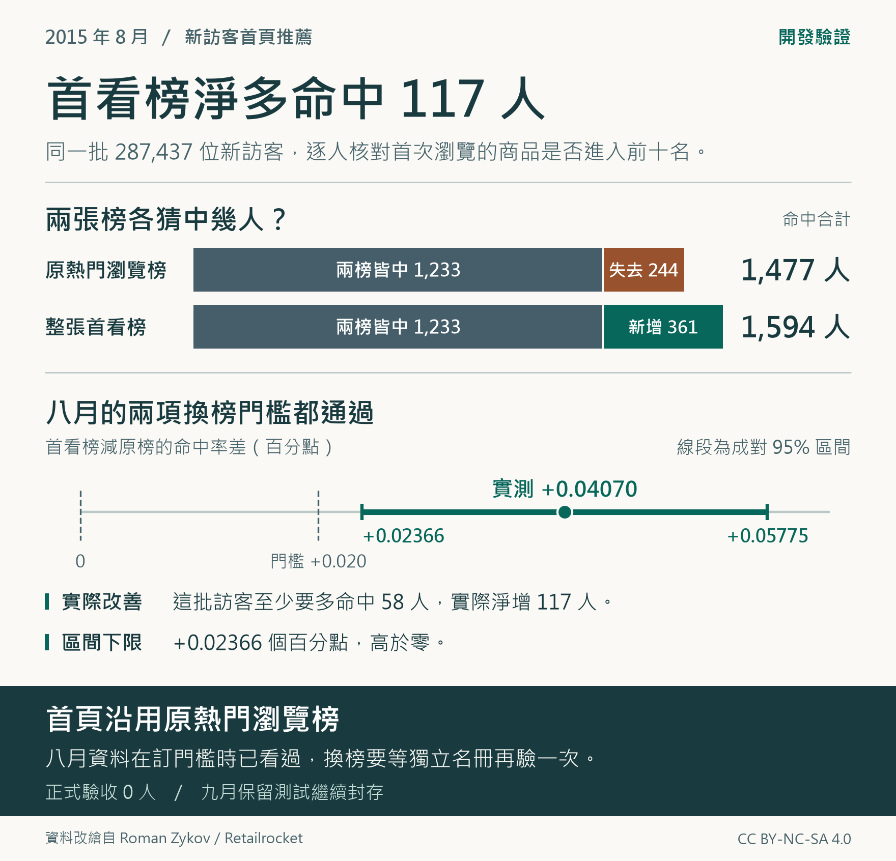

新訪客首看榜
逐席查看換榜後新增與失去的首看命中。點選商品，可看它的瀏覽、加購與購買推薦。
開發驗證月份
換成首看榜的得失
淨增 人
- 新增命中
- 失去命中
首頁沿用原熱門瀏覽榜。八月曾用於訂門檻，正式換榜要等獨立名冊再驗。


查看八月成效對照圖命中率差、成對 95% 區間與兩項換榜門檻。兩榜前十名
| 名次 | 原熱門瀏覽榜 | 整張首看榜 |
|---|
只有首看榜命中的訪客算新增，只有原榜命中的算失去。同一人首次瀏覽多件商品時，歸到命中榜單裡名次最前的商品，每人只算一次。